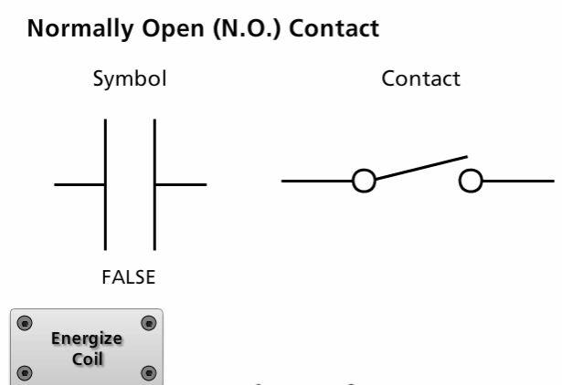
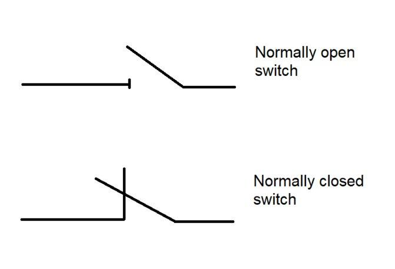

1. Definition
Electrical symbols are standardized graphical representations of electrical and electronic components used in engineering drawings. Reference tags, also called device designations or reference designations, identify individual components within a circuit or machine.
In industrial automation, electrical drawings use symbols and reference tags to show how power is distributed, how control circuits operate, where components are connected, and how technicians can locate devices during troubleshooting.
For example, an electrical drawing might show a contactor symbol labeled -K1, an overload relay labeled -F1, and a motor labeled -M1. The symbols communicate the component types, while the reference tags identify the specific devices in that drawing.
2. What is IEC?
IEC stands for the International Electrotechnical Commission, an international organization that publishes standards for electrical, electronic, and related technologies.
IEC standards support consistent representation of electrical components, circuit functions, documentation, and equipment identification.
Standards relevant to electrical drawings and documentation include:
- IEC 60617: Graphical symbols for diagrams.
- IEC 81346 series: Structuring principles and reference designations.
- IEC 61082 series: Preparation of documents used in electrotechnology.
A drawing may also use company-specific conventions, legacy standards, or other regional standards. Always check the drawing legend and applicable documentation rules instead of assuming every drawing follows the same convention.
3. Why electrical symbols matter
Electrical symbols allow engineers and maintenance technicians to understand a circuit without seeing the physical equipment.
They help technicians:
- Identify components and their electrical functions.
- Trace power from the incoming supply to a load.
- Follow control signals through switches, relays, and PLCs.
- Locate terminals, connectors, and cross-references.
- Diagnose open circuits, short circuits, and incorrect switching.
- Understand interlocks and electrical dependencies.
- Compare the installed wiring with the approved drawing.
A drawing is not simply a picture of a panel. It is a structured representation of the circuit and its relationships.
4. Common electrical symbols and reference tags
The following table shows common industrial drawing conventions. The exact graphical symbol and device designation must be verified against the applicable standard and drawing legend.
| Component | Common reference tag | Typical function |
|---|---|---|
| Circuit breaker | -Q1 |
Protects and switches an electrical circuit |
| Fuse | -F1 |
Protects against excessive current |
| Contactor | -K1 |
Switches power to a load |
| Auxiliary relay | -K2 |
Switches control contacts |
| Overload relay | -F2 or project-specific tag |
Protects a motor against specified overload conditions |
| Push button | -S1 |
Provides a manual control input |
| Selector switch | -S2 |
Selects an operating mode |
| Limit switch | -S3 |
Detects a mechanical position |
| Proximity sensor | -B1 or project-specific tag |
Detects an object without physical contact |
| Motor | -M1 |
Converts electrical energy into mechanical motion |
| Transformer | -T1 |
Transfers electrical energy between circuits |
| Power supply | -G1 or project-specific tag |
Converts or supplies electrical power |
| PLC | -A1 or project-specific tag |
Executes control logic |
| Terminal block | -X1 |
Provides an electrical connection point |
| Resistor | -R1 |
Provides resistance in a circuit |
| Capacitor | -C1 |
Stores electrical charge and affects circuit behavior |
| Diode | -V1 or project-specific tag |
Allows current preferentially in one direction |
| Solenoid valve coil | -Y1 or project-specific tag |
Electrically actuates a valve |
| Indicator lamp | -H1 |
Indicates a condition or status |
Important: These tags are common conventions, not universal assignments. For example, -F1 may identify a fuse or another protective device depending on the project's designation system. The drawing legend and project standards take precedence.
5. Understanding reference tags
A reference tag uniquely identifies a device or functional item within the relevant documentation structure.
For example:
-K1: Contactor or relay identified as K1.-M1: Motor identified as M1.-S1: Switch identified as S1.-X1: Terminal block identified as X1.
The letter and number often indicate a component category and an individual identifier. The exact meaning depends on the applicable designation standard and project conventions.
A device may have several representations across different pages. For example, the coil of -K1 may appear on a control schematic, while its main contacts appear on a power schematic. Both refer to the same physical contactor.
Example: contactor reference
Control circuit:
PLC output -> -K1 coil
Power circuit:
Supply -> -K1 main contacts -> -M1 motor
Auxiliary circuit:
-K1 auxiliary contact -> PLC input
The three appearances of -K1 refer to the same contactor. Its coil energizes, its main contacts switch the motor supply, and an auxiliary contact can provide status feedback.
This relationship is crucial when tracing a machine fault.
6. Common contact symbols
Switches and relay contacts are represented according to their electrical state and function. A key concept is the distinction between normally open (NO) and normally closed (NC) contacts.

Normally open (NO)
The contact is open in its defined normal state and closes when actuated.

Normally closed (NC)
The contact is closed in its defined normal state and opens when actuated.
In relay and contactor drawings, the normal state is generally shown with the coil de-energized. For a push button, it is generally the unactuated state. For sensors and special devices, the manufacturer or drawing convention may define the state differently.
NO and NC describe contact behavior. They do not, by themselves, tell you whether the device is safe, healthy, or correctly wired.
7. Power symbols vs control symbols
Electrical drawings commonly contain both power and control circuits.
Power circuit
The power circuit carries the energy supplied to the load.
Example:
Three-phase supply
|
v
Circuit breaker
|
v
Contactor main contacts
|
v
Overload protection
|
v
Three-phase motor
Control circuit
The control circuit determines when equipment should operate.
Example:
24 V DC supply
|
v
Control condition
|
v
PLC output or relay contact
|
v
Contactor coil
|
v
Contactor operates
The power circuit may carry substantial motor current, while the control circuit typically carries lower current for command and status functions. The actual ratings and voltages depend on the design.
A contactor can therefore appear in both circuits: its main contacts belong to the power circuit, and its coil belongs to the control circuit.
8. Terminals and connection references
A component symbol tells you what a device does. Terminal designations identify where wires connect.
Common IEC-style terminal conventions include:
| Terminal designation | Common use |
|---|---|
A1, A2 |
Relay or contactor coil terminals |
13, 14 |
Commonly a normally open auxiliary contact |
21, 22 |
Commonly a normally closed auxiliary contact |
L1, L2, L3 |
Three-phase supply terminals |
T1, T2, T3 |
Contactor load-side terminals, depending on device designation |
PE |
Protective earth |
N |
Neutral conductor |
X1:1, X1:2 |
Example terminal block and terminal numbering |
These are common conventions, but terminal numbering and function must be confirmed against the device markings and manufacturer documentation. In particular, not every component uses the same terminal system.
Example: reading a contactor
A contactor may have:
A1andA2for its coil.L1,L2,L3for the incoming three-phase supply.T1,T2,T3for the switched outputs.13and14for a normally open auxiliary contact.
If the coil receives its rated control voltage, the contactor operates and its contacts change state according to their design.
A technician troubleshooting a motor that will not start should not assume that the presence of voltage at A1 proves the contactor is functioning. The coil, return path, mechanical mechanism, main contacts, and downstream power circuit must also be checked as appropriate.
9. Reference tags vs terminal numbers vs wire numbers
These three identifiers answer different questions.
| Identifier | Example | What it identifies |
|---|---|---|
| Device reference | -K1 |
The contactor or relay device |
| Terminal designation | A1 |
A connection point on the device |
| Wire number | 105 |
A conductor or circuit connection, according to the drawing scheme |
| PLC address/tag | I0.0, Start_PB |
A PLC input address or logical variable |
| Cross-reference | Page/grid reference | Where a related coil, contact, or connection appears elsewhere |
For example, -K1:A1 may mean terminal A1 of device K1. A wire labeled 105 may connect that terminal to another point in the control circuit.
A PLC tag such as Motor_Start_Feedback may be linked to an auxiliary contact of K1 through a PLC input. It is a software identifier, not a physical terminal designation.
10. How to read a drawing legend
Before tracing a circuit, locate the drawing legend and title block.
Check:
- Drawing number and revision.
- Machine or equipment identification.
- Voltage and supply information.
- Applicable symbol and designation conventions.
- Wire-numbering and terminal-numbering rules.
- Page references and continuation symbols.
- Abbreviations and special project-specific symbols.
- Revision notes and change history.
An outdated drawing may describe a previous machine configuration. For maintenance and modification work, verify that the drawing revision matches the approved documentation and, where required, the actual installation.
11. Practical example: motor fails to start
Suppose a conveyor motor does not run when the operator presses the Start button.
The drawing shows a circuit breaker, a contactor, an overload relay, a PLC output, and an auxiliary contact used for feedback.
A structured investigation is:
- Identify the motor reference, for example
-M1. - Trace the power circuit backward from the motor through the overload device, contactor, and supply.
- Locate the contactor coil, for example
-K1, on the control drawing. - Identify the control conditions that permit the coil to energize.
- Check the PLC output and the relevant wiring references.
- Check the contactor's auxiliary feedback contact and the corresponding PLC input.
- Check protective devices and fault indications before attempting restart.
- Compare the actual circuit with the approved drawing.
This approach helps distinguish a missing command, an open control circuit, an unfulfilled permissive, a protective trip, a contactor failure, and a power-circuit fault.
Electrical measurements and inspections must be performed by authorized personnel using appropriate isolation, lockout/tagout, and test procedures.
12. Common mistakes
- Treating reference tags as universal across every project.
- Confusing a device tag with a terminal number or wire number.
- Assuming every NO or NC contact has the same normal-state definition.
- Failing to recognize that one contactor can appear in several places in a drawing.
- Confusing a PLC input address with a physical device designation.
- Assuming a symbol alone reveals the device's exact rating or model.
- Ignoring page cross-references and continuation symbols.
- Using an outdated drawing during troubleshooting.
- Treating an electrical drawing as proof that the installed wiring matches it.
13. Interview questions and answers
Q1. What is the purpose of IEC electrical symbols?
They provide standardized graphical representations that help engineers and technicians interpret electrical circuits consistently.
Q2. What is a reference tag?
A designation that identifies a device or functional item in the relevant documentation structure, such as -K1 for a contactor in a project's designation scheme.
Q3. What is the difference between a reference tag and a terminal number?
A reference tag identifies the device. A terminal number identifies a connection point on that device.
Q4. Why does a contactor appear in both power and control drawings?
Its coil belongs to the control circuit, while its main contacts switch the power circuit. Auxiliary contacts may also provide status feedback.
Q5. What is the difference between NO and NC contacts?
NO contacts are open in their defined normal state; NC contacts are closed in their defined normal state. The actual convention depends on the component and drawing standard.
Q6. What should be checked before using an electrical drawing for troubleshooting?
Verify the drawing revision, machine identification, legend, supply details, reference designations, and correspondence with the installed equipment.
14. Final mental model
When reading an electrical drawing, separate four layers of information:
- Symbol: What type of component or electrical function is represented?
- Reference tag: Which device is it?
- Terminal and wire identifiers: Where does the electrical connection go?
- Cross-references: Where is the related circuit or component represented elsewhere?
Once these are clear, a drawing becomes a practical troubleshooting map rather than a page full of mysterious lines and alphabet soup.
Next topic: 02_Schematics | Schematics: Follow power and control circuits. This will build on symbols and reference tags to trace complete electrical paths, understand how components interact, and follow a fault through the circuit.